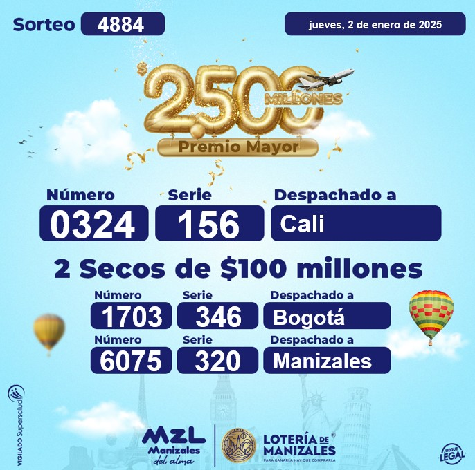

Loteria Manizales: Resultados
La loteria de Manizales, Fue creada en 1922, por ordenanza Nro. 34, del 29 de abril de 1.922, el Departamento de Caldas autorizó al Municipio de Manizales para establecer la Lotería de Manizales, lotería pública con premios en dinero, con el compromiso que se destinara el 20% del producto de su explotación al pabellón de tuberculosos de Manizales y el resto al acueducto público, a la Sociedad de Mejoras Públicas y al Teatro Municipal, en la proporción que estimara conveniente. En desarrollo de esa autorización el Concejo Municipal dictó el Acuerdo Nro. 29 de 1922 por medio del cual crea la Lotería de Manizales como una sección de la Tesorería – Gerencia de Bienes Municipales asesorada por una Junta compuesta por dos Concejales y un ciudadano particular. La Lotería de Manizales, es creada a solicitud del municipio de Manizales, y administrada directamente por el mismo, asumiendo a costo y riesgo su actividad, así como el lograr el posicionamiento en el mercado dentro de todo el territorio nacional.

Últimos Sorteos
- jueves 2 de enero de 2025 0324 Serie 156
- miércoles 18 de diciembre de 2024 5334 Serie 233
- miércoles 11 de diciembre de 2024 5397 Serie 236
- miércoles 4 de diciembre de 2024 6285 Serie 113
- miércoles 27 de noviembre de 2024 9121 Serie 068
- miércoles 20 de noviembre de 2024 4765 Serie 305
- miércoles 13 de noviembre de 2024 0022 Serie 183
El premio mayor de la Lotería de Manizales es de $2.500 millones de pesos colombianos.